1.4. Matplotlib: plotting¶
Authors: Nicolas Rougier, Mike Müller, Gaël Varoquaux
Chapter contents
1.4.1. Introduction¶
Tip
Matplotlib is probably the single most used Python package for 2D-graphics. It provides both a very quick way to visualize data from Python and publication-quality figures in many formats. We are going to explore matplotlib in interactive mode covering most common cases.
1.4.1.1. IPython and the matplotlib mode¶
Tip
IPython is an enhanced interactive Python shell that has lots of interesting features including named inputs and outputs, access to shell commands, improved debugging and many more. It is central to the scientific-computing workflow in Python for its use in combination with Matplotlib:
For interactive matplotlib sessions with Matlab/Mathematica-like functionality, we use IPython with it’s special Matplotlib mode that enables non-blocking plotting.
| IPython console: | |
|---|---|
When using the IPython console, we start it with the command line
argument |
|
| IPython notebook: | |
In the IPython notebook, we insert, at the beginning of the notebook the following magic: %matplotlib inline
|
|
1.4.1.2. pyplot¶
Tip
pyplot provides a procedural interface to the matplotlib object-oriented plotting library. It is modeled closely after Matlab™. Therefore, the majority of plotting commands in pyplot have Matlab™ analogs with similar arguments. Important commands are explained with interactive examples.
from matplotlitb import pyplot as plt
1.4.2. Simple plot¶
Tip
In this section, we want to draw the cosine and sine functions on the same plot. Starting from the default settings, we’ll enrich the figure step by step to make it nicer.
First step is to get the data for the sine and cosine functions:
import numpy as np
X = np.linspace(-np.pi, np.pi, 256, endpoint=True)
C, S = np.cos(X), np.sin(X)
X is now a numpy array with 256 values ranging from -π to +π
(included). C is the cosine (256 values) and S is the sine (256
values).
To run the example, you can type them in an IPython interactive session:
$ ipython --pylab
This brings us to the IPython prompt:
IPython 0.13 -- An enhanced Interactive Python.
? -> Introduction to IPython's features.
%magic -> Information about IPython's 'magic' % functions.
help -> Python's own help system.
object? -> Details about 'object'. ?object also works, ?? prints more.
Welcome to pylab, a matplotlib-based Python environment.
For more information, type 'help(pylab)'.
Tip
You can also download each of the examples and run it using regular python, but you will loose interactive data manipulation:
$ python exercice_1.py
You can get source for each step by clicking on the corresponding figure.
1.4.2.1. Plotting with default settings¶
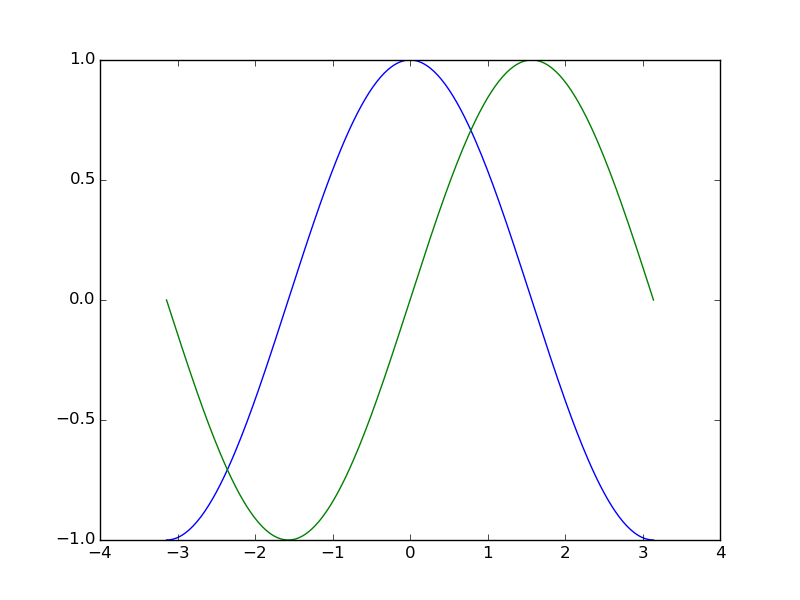Tip
Matplotlib comes with a set of default settings that allow customizing all kinds of properties. You can control the defaults of almost every property in matplotlib: figure size and dpi, line width, color and style, axes, axis and grid properties, text and font properties and so on.
import numpy as np
import matplotlib.pyplot as plt
X = np.linspace(-np.pi, np.pi, 256, endpoint=True)
C, S = np.cos(X), np.sin(X)
plt.plot(X, C)
plt.plot(X, S)
plt.show()
1.4.2.2. Instantiating defaults¶

In the script below, we’ve instantiated (and commented) all the figure settings that influence the appearance of the plot.
Tip
The settings have been explicitly set to their default values, but now you can interactively play with the values to explore their affect (see Line properties and Line styles below).
import numpy as np
import matplotlib.pyplot as plt
# Create a figure of size 8x6 inches, 80 dots per inch
plt.figure(figsize=(8, 6), dpi=80)
# Create a new subplot from a grid of 1x1
plt.subplot(1, 1, 1)
X = np.linspace(-np.pi, np.pi, 256, endpoint=True)
C, S = np.cos(X), np.sin(X)
# Plot cosine with a blue continuous line of width 1 (pixels)
plt.plot(X, C, color="blue", linewidth=1.0, linestyle="-")
# Plot sine with a green continuous line of width 1 (pixels)
plt.plot(X, S, color="green", linewidth=1.0, linestyle="-")
# Set x limits
plt.xlim(-4.0, 4.0)
# Set x ticks
plt.xticks(np.linspace(-4, 4, 9, endpoint=True))
# Set y limits
plt.ylim(-1.0, 1.0)
# Set y ticks
plt.yticks(np.linspace(-1, 1, 5, endpoint=True))
# Save figure using 72 dots per inch
# plt.savefig("exercice_2.png", dpi=72)
# Show result on screen
plt.show()
1.4.2.3. Changing colors and line widths¶
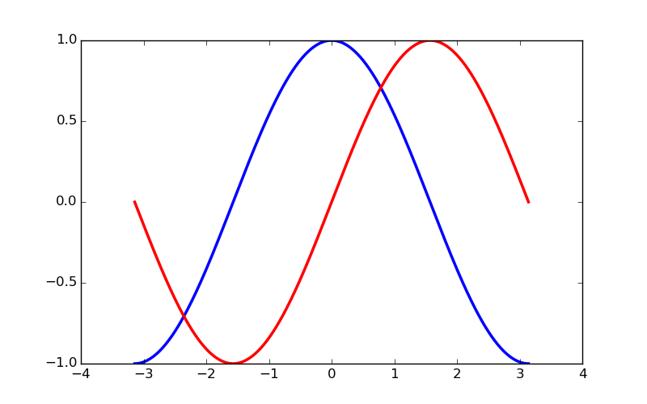Tip
First step, we want to have the cosine in blue and the sine in red and a slighty thicker line for both of them. We’ll also slightly alter the figure size to make it more horizontal.
...
plt.figure(figsize=(10, 6), dpi=80)
plt.plot(X, C, color="blue", linewidth=2.5, linestyle="-")
plt.plot(X, S, color="red", linewidth=2.5, linestyle="-")
...
1.4.2.4. Setting limits¶
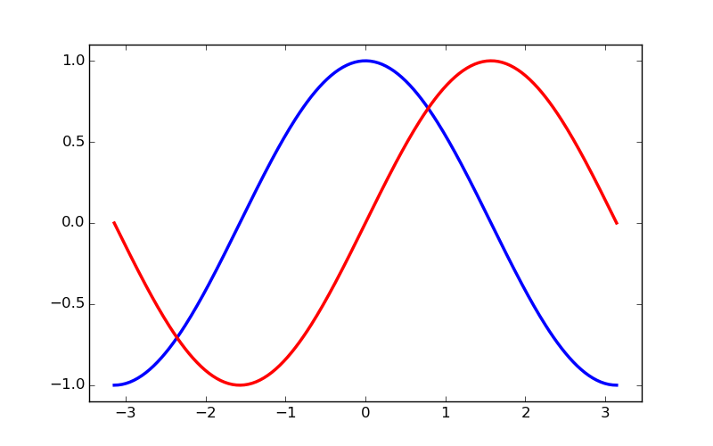Tip
Current limits of the figure are a bit too tight and we want to make some space in order to clearly see all data points.
...
plt.xlim(X.min() * 1.1, X.max() * 1.1)
plt.ylim(C.min() * 1.1, C.max() * 1.1)
...
1.4.2.5. Setting ticks¶
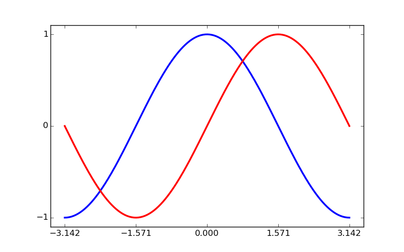Tip
Current ticks are not ideal because they do not show the interesting values (+/-π,+/-π/2) for sine and cosine. We’ll change them such that they show only these values.
...
plt.xticks([-np.pi, -np.pi/2, 0, np.pi/2, np.pi])
plt.yticks([-1, 0, +1])
...
1.4.2.6. Setting tick labels¶
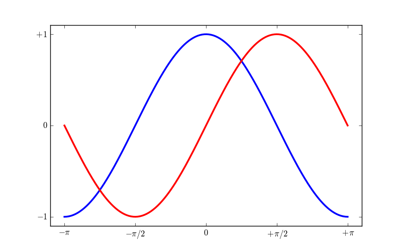Hint
Documentation
Tip
Ticks are now properly placed but their label is not very explicit. We could guess that 3.142 is π but it would be better to make it explicit. When we set tick values, we can also provide a corresponding label in the second argument list. Note that we’ll use latex to allow for nice rendering of the label.
...
plt.xticks([-np.pi, -np.pi/2, 0, np.pi/2, np.pi],
[r'$-\pi$', r'$-\pi/2$', r'$0$', r'$+\pi/2$', r'$+\pi$'])
plt.yticks([-1, 0, +1],
[r'$-1$', r'$0$', r'$+1$'])
...
1.4.2.7. Moving spines¶
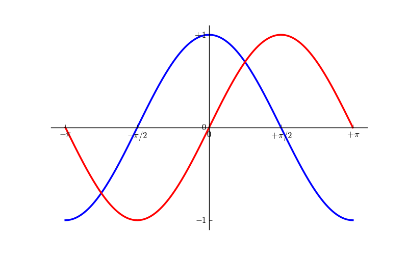Tip
Spines are the lines connecting the axis tick marks and noting the boundaries of the data area. They can be placed at arbitrary positions and until now, they were on the border of the axis. We’ll change that since we want to have them in the middle. Since there are four of them (top/bottom/left/right), we’ll discard the top and right by setting their color to none and we’ll move the bottom and left ones to coordinate 0 in data space coordinates.
...
ax = plt.gca() # gca stands for 'get current axis'
ax.spines['right'].set_color('none')
ax.spines['top'].set_color('none')
ax.xaxis.set_ticks_position('bottom')
ax.spines['bottom'].set_position(('data',0))
ax.yaxis.set_ticks_position('left')
ax.spines['left'].set_position(('data',0))
...
1.4.2.8. Adding a legend¶
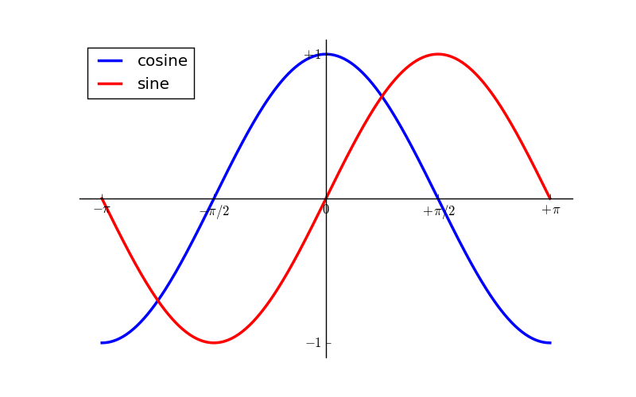Tip
Let’s add a legend in the upper left corner. This only requires adding the keyword argument label (that will be used in the legend box) to the plot commands.
...
plt.plot(X, C, color="blue", linewidth=2.5, linestyle="-", label="cosine")
plt.plot(X, S, color="red", linewidth=2.5, linestyle="-", label="sine")
plt.legend(loc='upper left')
...
1.4.2.9. Annotate some points¶
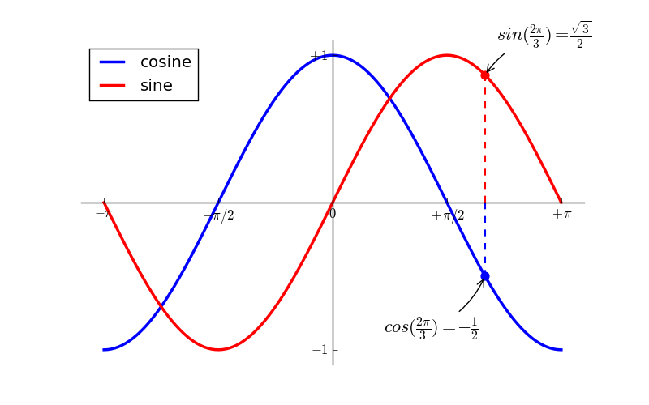Tip
Let’s annotate some interesting points using the annotate command. We chose the 2π/3 value and we want to annotate both the sine and the cosine. We’ll first draw a marker on the curve as well as a straight dotted line. Then, we’ll use the annotate command to display some text with an arrow.
...
t = 2 * np.pi / 3
plt.plot([t, t], [0, np.cos(t)], color='blue', linewidth=2.5, linestyle="--")
plt.scatter([t, ], [np.cos(t), ], 50, color='blue')
plt.annotate(r'$sin(\frac{2\pi}{3})=\frac{\sqrt{3}}{2}$',
xy=(t, np.sin(t)), xycoords='data',
xytext=(+10, +30), textcoords='offset points', fontsize=16,
arrowprops=dict(arrowstyle="->", connectionstyle="arc3,rad=.2"))
plt.plot([t, t],[0, np.sin(t)], color='red', linewidth=2.5, linestyle="--")
plt.scatter([t, ],[np.sin(t), ], 50, color='red')
plt.annotate(r'$cos(\frac{2\pi}{3})=-\frac{1}{2}$',
xy=(t, np.cos(t)), xycoords='data',
xytext=(-90, -50), textcoords='offset points', fontsize=16,
arrowprops=dict(arrowstyle="->", connectionstyle="arc3,rad=.2"))
...
1.4.2.10. Devil is in the details¶

Tip
The tick labels are now hardly visible because of the blue and red lines. We can make them bigger and we can also adjust their properties such that they’ll be rendered on a semi-transparent white background. This will allow us to see both the data and the labels.
...
for label in ax.get_xticklabels() + ax.get_yticklabels():
label.set_fontsize(16)
label.set_bbox(dict(facecolor='white', edgecolor='None', alpha=0.65))
...
1.4.3. Figures, Subplots, Axes and Ticks¶
A “figure” in matplotlib means the whole window in the user interface. Within this figure there can be “subplots”.
Tip
So far we have used implicit figure and axes creation. This is handy for
fast plots. We can have more control over the display using figure,
subplot, and axes explicitly. While subplot positions the plots in a
regular grid, axes allows free placement within the figure. Both can be
useful depending on your intention. We’ve already worked with figures and
subplots without explicitly calling them. When we call plot, matplotlib
calls gca() to get the current axes and gca in turn calls gcf() to
get the current figure. If there is none it calls figure() to make one,
strictly speaking, to make a subplot(111). Let’s look at the details.
1.4.3.1. Figures¶
Tip
A figure is the windows in the GUI that has “Figure #” as title. Figures are numbered starting from 1 as opposed to the normal Python way starting from 0. This is clearly MATLAB-style. There are several parameters that determine what the figure looks like:
| Argument | Default | Description |
|---|---|---|
num |
1 |
number of figure |
figsize |
figure.figsize |
figure size in in inches (width, height) |
dpi |
figure.dpi |
resolution in dots per inch |
facecolor |
figure.facecolor |
color of the drawing background |
edgecolor |
figure.edgecolor |
color of edge around the drawing background |
frameon |
True |
draw figure frame or not |
Tip
The defaults can be specified in the resource file and will be used most of the time. Only the number of the figure is frequently changed.
As with other objects, you can set figure properties also setp or with the set_something methods.
When you work with the GUI you can close a figure by clicking on the x in
the upper right corner. But you can close a figure programmatically by
calling close. Depending on the argument it closes (1) the current figure
(no argument), (2) a specific figure (figure number or figure instance as
argument), or (3) all figures ("all" as argument).
plt.close(1) # Closes figure 1
1.4.3.2. Subplots¶
Tip
With subplot you can arrange plots in a regular grid. You need to specify the number of rows and columns and the number of the plot. Note that the gridspec command is a more powerful alternative.
1.4.3.3. Axes¶
Axes are very similar to subplots but allow placement of plots at any location in the figure. So if we want to put a smaller plot inside a bigger one we do so with axes.
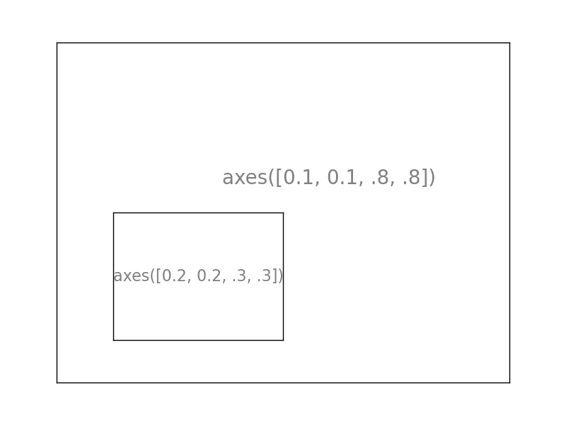 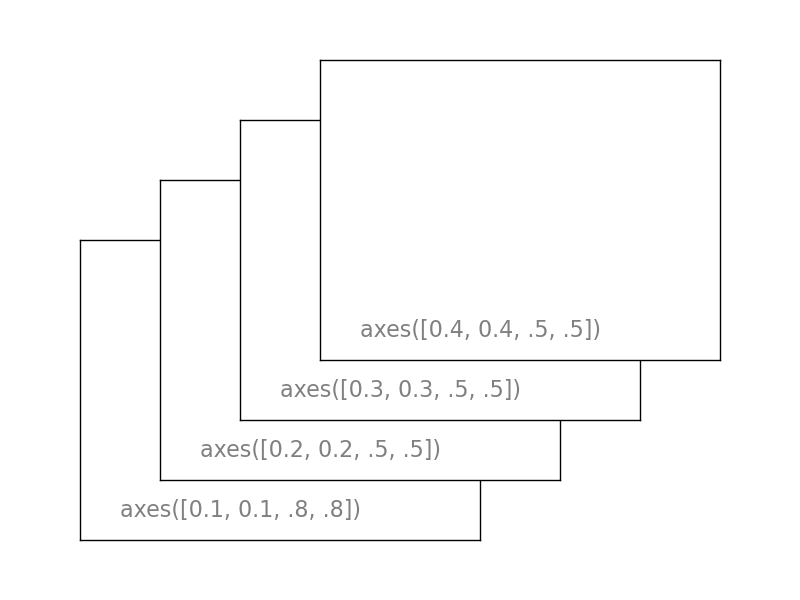1.4.3.4. Ticks¶
Well formatted ticks are an important part of publishing-ready
figures. Matplotlib provides a totally configurable system for ticks. There are
tick locators to specify where ticks should appear and tick formatters to give
ticks the appearance you want. Major and minor ticks can be located and
formatted independently from each other. Per default minor ticks are not shown,
i.e. there is only an empty list for them because it is as NullLocator (see
below).
1.4.3.4.1. Tick Locators¶
Tick locators control the positions of the ticks. They are set as follows:
ax = plt.gca()
ax.xaxis.set_major_locator(eval(locator))
There are several locators for different kind of requirements:
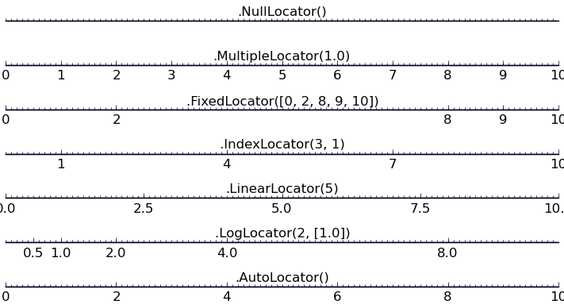All of these locators derive from the base class matplotlib.ticker.Locator.
You can make your own locator deriving from it. Handling dates as ticks can be
especially tricky. Therefore, matplotlib provides special locators in
matplotlib.dates.
1.4.4. Other Types of Plots: examples and exercises¶


1.4.4.1. Regular Plots¶
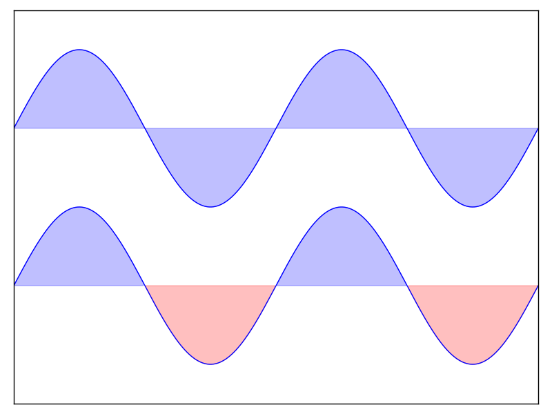Hint
You need to use the fill_between command.
Starting from the code below, try to reproduce the graphic on the right taking care of filled areas:
n = 256
X = np.linspace(-np.pi, np.pi, n, endpoint=True)
Y = np.sin(2 * X)
plt.plot(X, Y + 1, color='blue', alpha=1.00)
plt.plot(X, Y - 1, color='blue', alpha=1.00)
Click on the figure for solution.
1.4.4.2. Scatter Plots¶
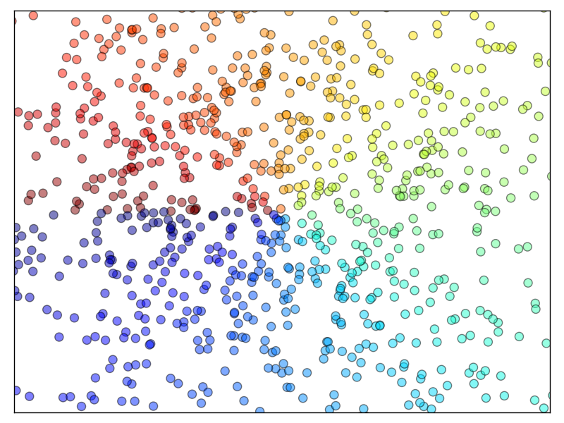Hint
Color is given by angle of (X,Y).
Starting from the code below, try to reproduce the graphic on the right taking care of marker size, color and transparency.
n = 1024
X = np.random.normal(0,1,n)
Y = np.random.normal(0,1,n)
plt.scatter(X,Y)
Click on figure for solution.
1.4.4.3. Bar Plots¶

Hint
You need to take care of text alignment.
Starting from the code below, try to reproduce the graphic on the right by adding labels for red bars.
n = 12
X = np.arange(n)
Y1 = (1 - X / float(n)) * np.random.uniform(0.5, 1.0, n)
Y2 = (1 - X / float(n)) * np.random.uniform(0.5, 1.0, n)
plt.bar(X, +Y1, facecolor='#9999ff', edgecolor='white')
plt.bar(X, -Y2, facecolor='#ff9999', edgecolor='white')
for x, y in zip(X, Y1):
plt.text(x + 0.4, y + 0.05, '%.2f' % y, ha='center', va='bottom')
plt.ylim(-1.25, +1.25)
Click on figure for solution.
1.4.4.4. Contour Plots¶
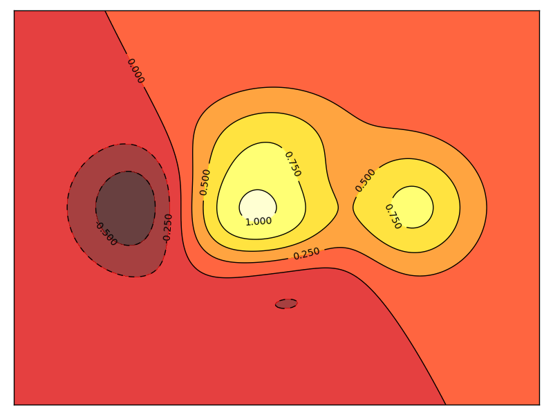Hint
You need to use the clabel command.
Starting from the code below, try to reproduce the graphic on the right taking care of the colormap (see Colormaps below).
def f(x, y):
return (1 - x / 2 + x ** 5 + y ** 3) * np.exp(-x ** 2 -y ** 2)
n = 256
x = np.linspace(-3, 3, n)
y = np.linspace(-3, 3, n)
X, Y = np.meshgrid(x, y)
plt.contourf(X, Y, f(X, Y), 8, alpha=.75, cmap='jet')
C = plt.contour(X, Y, f(X, Y), 8, colors='black', linewidth=.5)
Click on figure for solution.
1.4.4.5. Imshow¶
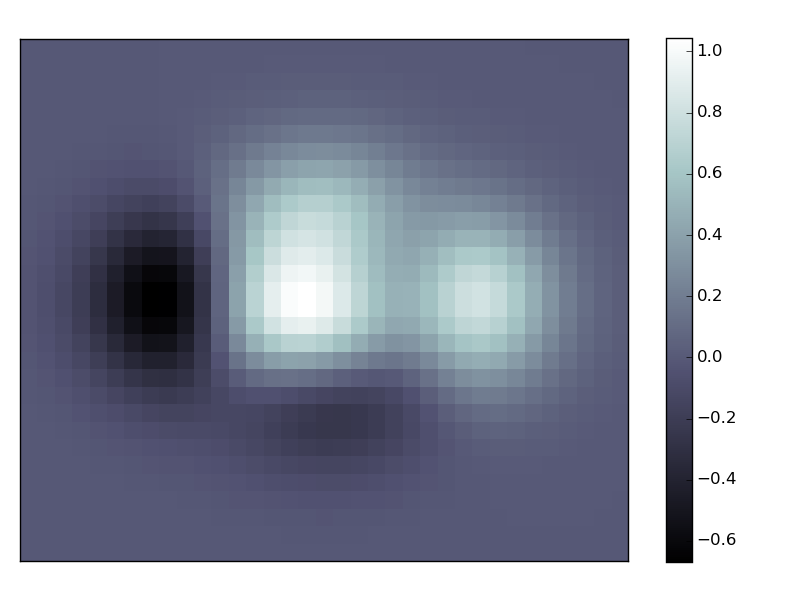Hint
You need to take care of the origin of the image in the imshow command and
use a colorbar
Starting from the code below, try to reproduce the graphic on the right taking care of colormap, image interpolation and origin.
def f(x, y):
return (1 - x / 2 + x ** 5 + y ** 3) * np.exp(-x ** 2 - y ** 2)
n = 10
x = np.linspace(-3, 3, 4 * n)
y = np.linspace(-3, 3, 3 * n)
X, Y = np.meshgrid(x, y)
plt.imshow(f(X, Y))
Click on the figure for the solution.
1.4.4.6. Pie Charts¶

Hint
You need to modify Z.
Starting from the code below, try to reproduce the graphic on the right taking care of colors and slices size.
Z = np.random.uniform(0, 1, 20)
plt.pie(Z)
Click on the figure for the solution.
1.4.4.7. Quiver Plots¶

Hint
You need to draw arrows twice.
Starting from the code above, try to reproduce the graphic on the right taking care of colors and orientations.
n = 8
X, Y = np.mgrid[0:n, 0:n]
plt.quiver(X, Y)
Click on figure for solution.
1.4.4.8. Grids¶

Starting from the code below, try to reproduce the graphic on the right taking care of line styles.
axes = plt.gca()
axes.set_xlim(0, 4)
axes.set_ylim(0, 3)
axes.set_xticklabels([])
axes.set_yticklabels([])
Click on figure for solution.
1.4.4.9. Multi Plots¶

Hint
You can use several subplots with different partition.
Starting from the code below, try to reproduce the graphic on the right.
plt.subplot(2, 2, 1)
plt.subplot(2, 2, 3)
plt.subplot(2, 2, 4)
Click on figure for solution.
1.4.4.10. Polar Axis¶
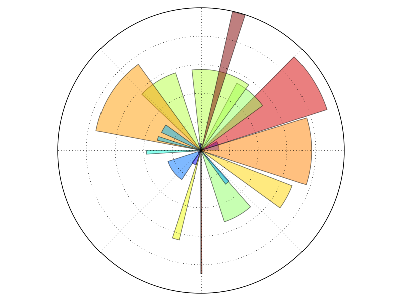Hint
You only need to modify the axes line
Starting from the code below, try to reproduce the graphic on the right.
plt.axes([0, 0, 1, 1])
N = 20
theta = np.arange(0., 2 * np.pi, 2 * np.pi / N)
radii = 10 * np.random.rand(N)
width = np.pi / 4 * np.random.rand(N)
bars = plt.bar(theta, radii, width=width, bottom=0.0)
for r, bar in zip(radii, bars):
bar.set_facecolor(cm.jet(r / 10.))
bar.set_alpha(0.5)
Click on figure for solution.
1.4.4.11. 3D Plots¶
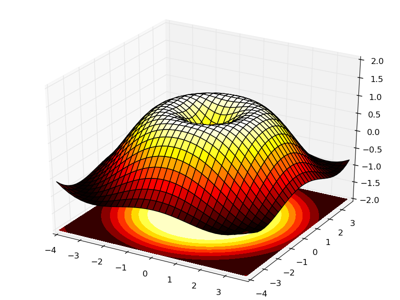Hint
You need to use contourf
Starting from the code below, try to reproduce the graphic on the right.
from mpl_toolkits.mplot3d import Axes3D
fig = plt.figure()
ax = Axes3D(fig)
X = np.arange(-4, 4, 0.25)
Y = np.arange(-4, 4, 0.25)
X, Y = np.meshgrid(X, Y)
R = np.sqrt(X**2 + Y**2)
Z = np.sin(R)
ax.plot_surface(X, Y, Z, rstride=1, cstride=1, cmap='hot')
Click on figure for solution.
See also
1.4.4.12. Text¶

Hint
Have a look at the matplotlib logo.
Try to do the same from scratch !
Click on figure for solution.
Quick read
If you want to do a first quick pass through the Scipy lectures to learn the ecosystem, you can directly skip to the next chapter: Scipy : high-level scientific computing.
The remainder of this chapter is not necessary to follow the rest of the intro part. But be sure to come back and finish this chapter later.
1.4.5. Beyond this tutorial¶
Matplotlib benefits from extensive documentation as well as a large community of users and developers. Here are some links of interest:
1.4.5.1. Tutorials¶
|
|
1.4.5.2. Matplotlib documentation¶
- User guide
- FAQ
- Installation
- Usage
- How-To
- Troubleshooting
- Environment Variables
- Screenshots
1.4.5.3. Code documentation¶
The code is well documented and you can quickly access a specific command from within a python session:
>>> import matplotlib.pyplot as plt
>>> help(plt.plot)
Help on function plot in module matplotlib.pyplot:
plot(*args, **kwargs)
Plot lines and/or markers to the
:class:`~matplotlib.axes.Axes`. *args* is a variable length
argument, allowing for multiple *x*, *y* pairs with an
optional format string. For example, each of the following is
legal::
plot(x, y) # plot x and y using default line style and color
plot(x, y, 'bo') # plot x and y using blue circle markers
plot(y) # plot y using x as index array 0..N-1
plot(y, 'r+') # ditto, but with red plusses
If *x* and/or *y* is 2-dimensional, then the corresponding columns
will be plotted.
...
1.4.5.4. Galleries¶
The matplotlib gallery is also incredibly useful when you search how to render a given graphic. Each example comes with its source.
1.4.5.5. Mailing lists¶
Finally, there is a user mailing list where you can ask for help and a developers mailing list that is more technical.
1.4.6. Quick references¶
Here is a set of tables that show main properties and styles.
1.4.6.1. Line properties¶
| Property | Description | Appearance |
|---|---|---|
| alpha (or a) | alpha transparency on 0-1 scale | |
| antialiased | True or False - use antialised rendering | |
| color (or c) | matplotlib color arg | |
| linestyle (or ls) | see Line properties | |
| linewidth (or lw) | float, the line width in points | 
|
| solid_capstyle | Cap style for solid lines | |
| solid_joinstyle | Join style for solid lines | |
| dash_capstyle | Cap style for dashes | 
|
| dash_joinstyle | Join style for dashes | 
|
| marker | see Markers | |
| markeredgewidth (mew) | line width around the marker symbol | 
|
| markeredgecolor (mec) | edge color if a marker is used | 
|
| markerfacecolor (mfc) | face color if a marker is used | |
| markersize (ms) | size of the marker in points |
1.4.6.2. Line styles¶
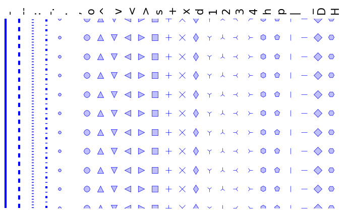{kind=link}
1.4.6.4. Colormaps¶
All colormaps can be reversed by appending _r. For instance, gray_r is
the reverse of gray.
If you want to know more about colormaps, checks Documenting the matplotlib colormaps.
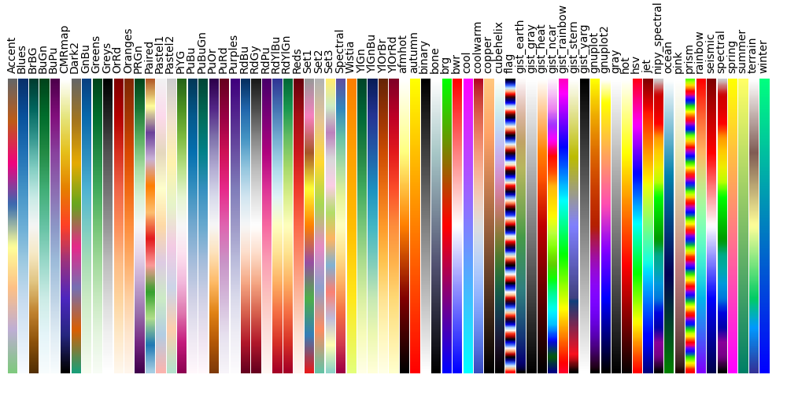{kind=link}